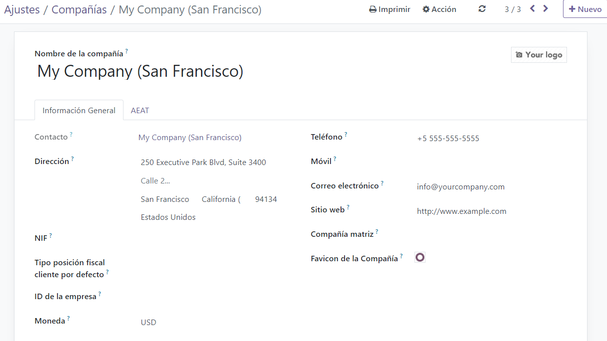
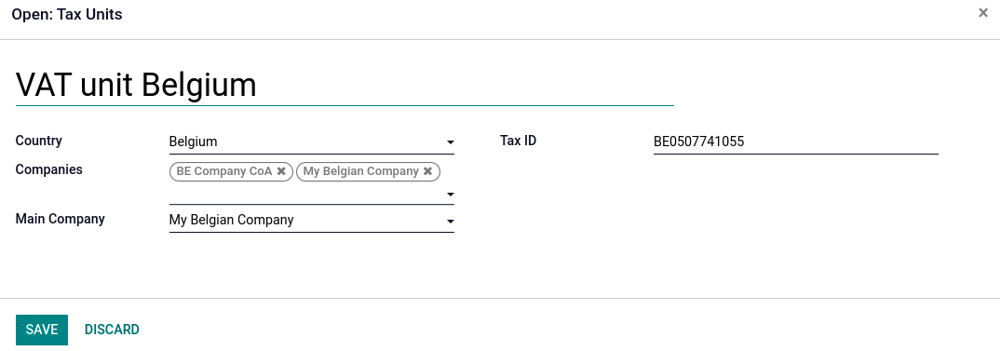
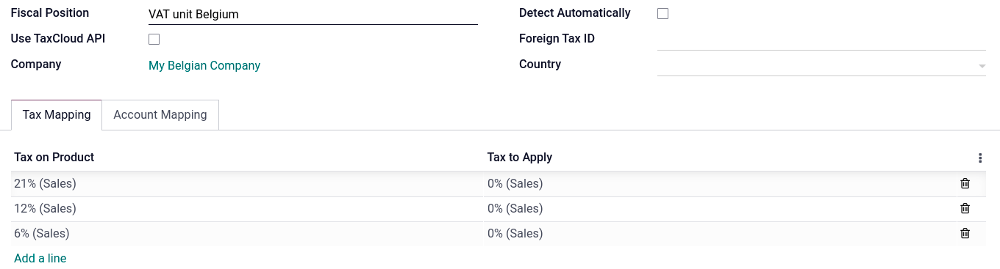
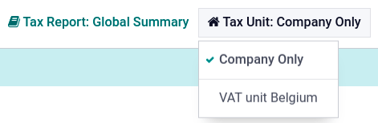

VAT units¶
Important
This is only applicable to multi-company environments.
A VAT unit is a group of VAT-taxable enterprises that are legally independent of each other but are closely linked financially, organizationally, and economically and therefore considered the same VAT-taxable enterprise. VAT units are not mandatory, but if created, constituent companies of the unit must belong to the same country, use the same currency, and one company must be designated as the representative company of the VAT unit. VAT units receive a specific tax ID intended only for tax returns. Constituent companies keep their tax ID used for commercial purposes.
Example
Enterprise A owes €300.000,00 of VAT taxes and enterprise B can recover €280.000,00 of VAT taxes. They form up as a VAT unit so that the two amounts balance out and must conjointly only pay €20.000,00 of VAT taxes.
Configuration¶
To configure a VAT unit, go to , scroll down to the Companies section, and click Manage Companies. Select the company to serve the representative role, and in the General Information tab, fill in the mandatory fields for the .XML export when exporting the tax report: Company Name, Address, VAT, Currency, Phone, and Email.
Then, click on the VAT Units tab, Add a line, and either select an existing VAT unit, or create a new one. Enter a name for the unit, Country of the constituent companies and tax report, the Companies, the Main Company that serves the representative role, and the Tax ID of the VAT unit.
Fiscal position¶
As transactions between constituents of the same VAT unit are not subject to VAT, it is possible to create a tax mapping (fiscal position) to avoid the application of VAT on inter-constituent transactions.
Be sure a constituent company has been selected before, then go to , and Create a new fiscal position. Click the Tax Mapping tab, select the Tax on Product usually applied for non-constituent transactions, and in Tax to Apply, select the 0% tax to apply for constituent transactions.
Do the same for the Account Mapping tab if required, and repeat this process for each constituent company on your database.
Example
Depending on your localization package, taxes may vary from the screenshot displayed.
Then, assign the fiscal position by opening the Contacts app. Search for a constituent company, and open the contact’s card. Click the Sales & Purchase tab, and in the Fiscal Position field, input the fiscal position created for the VAT unit. Repeat the process for each constituent company card form, on each company database.
Tax report¶
The representative company can access the aggregated tax report of the VAT unit by going to , and selecting the VAT unit in Tax Unit. This report contains the aggregated transactions of all constituents and the .XML export contains the name and VAT number of the main company.
